LILY ADLIN
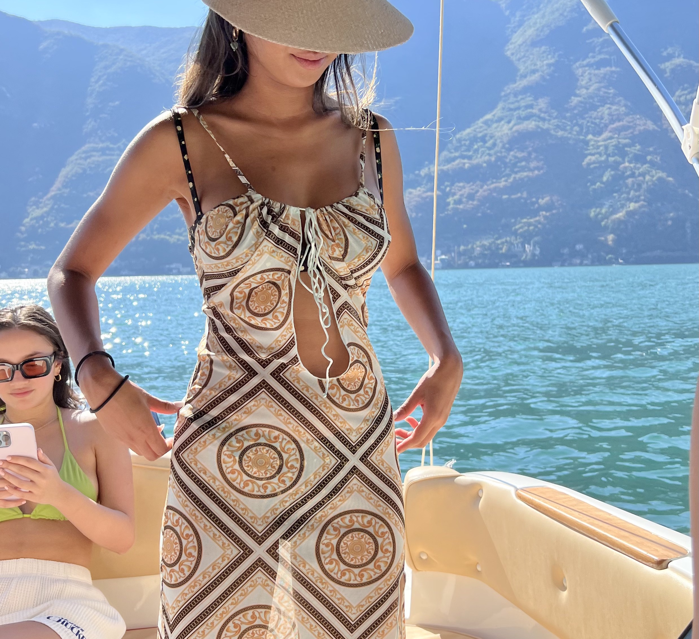
About
Happy to have you! I'm Lily - a college student in my twenties with a variety of passions all around. During my suburban upbringing at the heart of the East Bay Area in California, I have been fortunate enough to unveil two of my greatest interests: mathematics and fashion. While seemingly unrelated, I hope to pursue a career that allows me to apply my interest in technology, along with all aspects of STEM, in the fashion industry. Moreover, I hope to one day initiate greater momentum in dismantling the fast fashion industry, in order to create a more equitable environment.
In my spare time, I enjoy the company of friends and family. With a strong support system in the Bay, I nervously committed to California Polytechnic State University, San Luis Obispo. It was here that I stumbled upon my new home, a place that allowed me to express my most authentic self, identity, and perspective. Between pursuing a degree in Mathematics, serving on the Executive Board of my sorority, and gaining priceless on-hand experience, I have created bonds with the people I now consider a second family.
Currently, I live in San Luis Obispo, but I always make frequent visits to see my family. Although my brother has returned back to the West coast, he previously worked in Manhattan, New York, which inspired me to want to experience living in the Big Apple one day. For the solo year he was on the East Coast, I tried to visit as ofter as possible - I'll say it allows me to "elevate" my knowledge on the fashion industry and brainstorm new ways to leave a positive influence on it. Traveling has always been an outlet of inspiration for me, beginning with intermittent trips to Kuala Lumpur, Malaysia, my parents' native country. With family located around the world and exposure to a number of countries in Europe as well as Asia, I have been fortunate enough to diversify my mindset, as well as broaden my horizons. This has ultimately fired a passion to embrace new cultures with an open mind and heart. To discover more, take a look at my Academics and Work Experience below.
Academics and Work Experience
Wrapping up my third year at Cal Poly State University, located at the heart of California’s central coast, I am blessed to hold priceless experience in a variety of aspects from relevant coursework to hands-on experience. I am pursuing a B.S. in Mathematics with an Applied Concentration. I'm currently on track to graduate in June 2024. In the past three years, I have created priceless connections in the Mathematics Department and am now grateful for the opportunity to conduct research on behalf of the Cal Poly College of Science and Mathematics. Some applicable coursework of mine includes Computer Programming (Python3 fluency), Linear Algebra and Differential Equations, Numerical Analysis, Combinatorics, Real Analysis, and Vector Analysis.
Upon graduating from Dougherty Valley High School in 2020, I was torn at what major to pursue, due to my varied interest in engineering, marketing, and sustainable ways of living. However, my love for mathematics from a young age, as well as my creative interest in technology, finalized my decision. In search of applicable experience that was relevant to my major, I applied for an internship at a San Francisco startup. In 2021, I worked as the Quality Assurance and Software Engineering Intern for StreamLoan, a digital mortgage company focused on renovating the process for home and loan applications. With my internship at StreamLoan, I learned to:
- Operate and maintain tests for product development in the stage environment within the Quality Assurance Team to anticipate and identify any potential issues.
- Coordinate with the marketing director, engineering team, and campaigning committees of over 25+ individuals to establish a consistent social media presence, as well as assess analytics to optimize networking and audience reach.
- Code and create software such as an ROI Calculator and other branching websites.
This provided me with hands-on exposure to frontend, as well as backend, software engineering. The summer following my second year, I attended EY’s Women in Tech conference, located in Denver, Colorado. I am thankful for the opportunity to network with more women in the industry, as well as gain new knowledge about our advancing technology. This particular opportunity stood out to me because of a Microsoft Hackathon I attended with my best friend in high school. Witnessing new Artificial Intelligence and developing applications for Microsoft’s HoloLens was breathtaking, and opened my eyes up to the possibilities that lay ahead.
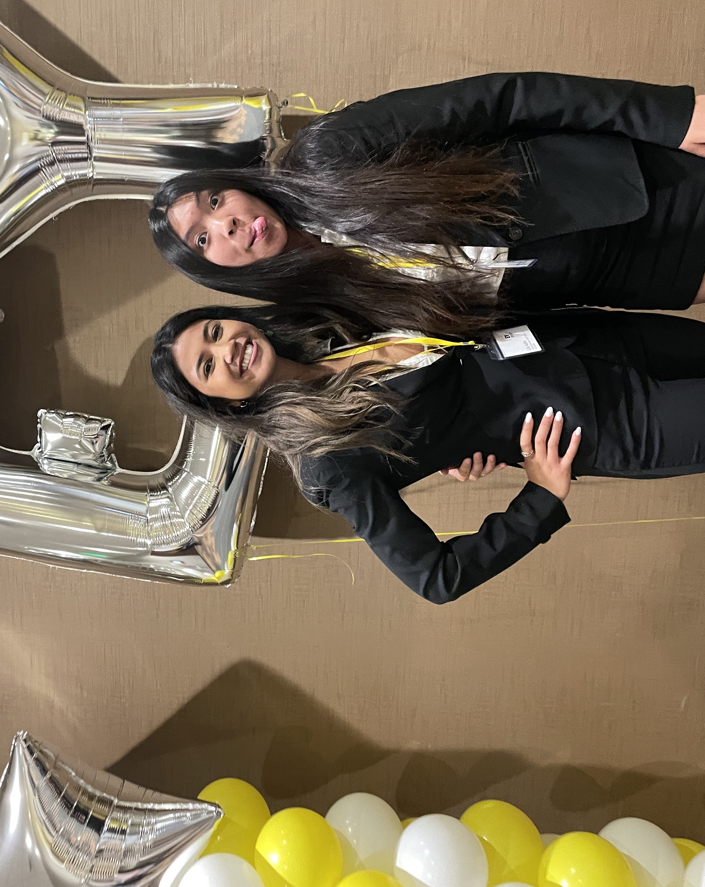
This summer, I have the opportunity to gain on-site experience with the Cal Poly College of Science and Mathematics as a Frost Undergraduate Researcher. Working alongside my professors and peers, I gain hands-on experience focusing on the application of mathematics. My research incorporates network theory, graph theory, and function analysis - essential concepts inherently present in advancing technology. To hear more about my initiative, take a look at my Leadership and Involvement here.
Leadership and Involvement
Previously, I served as the Vice President of Diversity, Equity, and Inclusion for Alpha Phi - Epsilon Chi. I take pride in the position to create a welcoming environment for all individuals, both members and non-members in our community.
During my first-year in college, I was thrown into a sea of unprecedented times (Coronavirus pandemic). It was hard enough navigating my academics and emerging identity, but I found community in my Greek organization. I prioritized making others feel safe and comfortable at Cal Poly since I knew how difficult it can be.
I was appointed Director of Social Media for 2020-2021, where I managed the media and marketing presentation of our organization and was awarded Outstanding Social Media by Alpha Phi International. I wanted to grow my impact on my campus, so my sophomore year, I ran for Vice President of Diversity, Equity, and Inclusion. After I was elected, I joyfully implemented new and simple practices to help us adapt to the current status of the world we live in. I believe honest and transparent education is the key to proactivity.
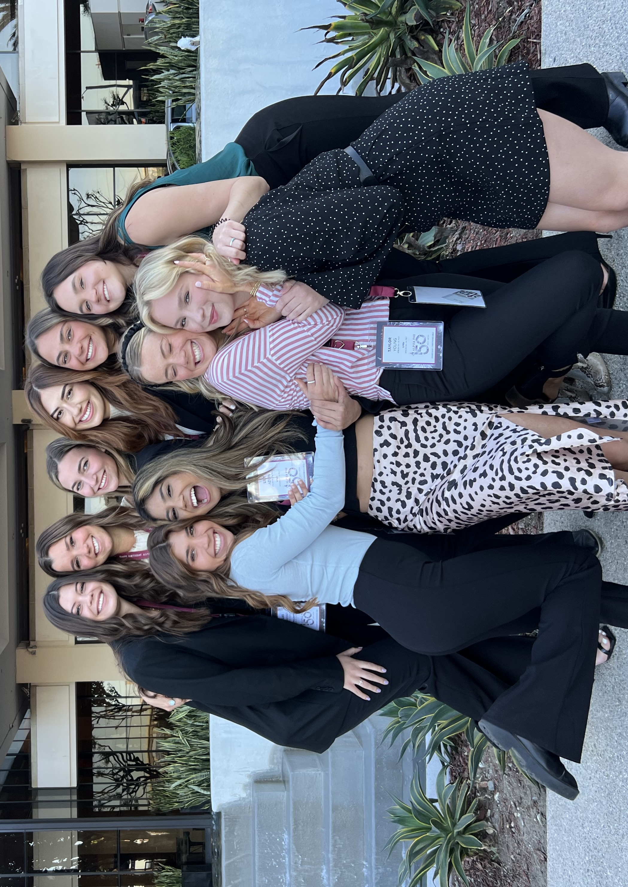
Fashion and Marketing
Me + My Beloved Closet
From the ripe age of 13 years old, there was only one thing I loved more than makeup (and above all other things beauty related) - my expression of creativity through videos and editing. So, I did as many other middle schoolers did, and created an Instagram to explore:
@LilyAdlin.Makeup
And soon enough, a video of mine was reposted by a large account, garnering over 300,000 views. Keep in mind, that this was “viral” in 2016, at least it was for me. I continued to upload 30 second edited Instagram videos (reels before reels were a thing), and accumulated 17,000 followers. Now it was time to expand my brand to YouTube.
By the time I was halfway through high school, it became clear to me that as much I still enjoyed doing makeup, broadcasting it on a platform awaiting constant critique inevitably took a toll on my mental health. So I took a break. In this break, I began creating YouTube “vlogs,” or edited recap videos from my vacations or in my daily life - You may have come across my “Day at a California Public High School” vlog that amassed nearly 1 million views.
I began collaborating with companies like E.L.F. Cosmetics, Princess Polly Boutique, White Fox Boutiqueand Curology on brand deals that helped elevate my audience reach, and in return, promote their product.
As I entered college, I was not only switching my major to mathematics, but struggling to find my identity and what I truly cared about. So I applied for Director of Social Media for my sorority. To my surprise, I was appointed the position and even ended up being awarded Outstanding Social Media at the Alpha Phi International Leadership Conference. Through this position, I was not only able to develop my social media and marketing skills in a new setting, but I discovered my passion of fostering a safe and inclusive community - which I am now able to do on a greater scale as Vice President of Diversity, Equity, and Inclusion.
I already mentioned my internship at StreamLoan a few summers ago, but the scope of my responsibilities reached beyond maintaining products and exposure to back and frontend engineering. I also worked on their marketing team, to help with fluidity throughout the company’s numerous applications, and of course to help elevate their social media pages.
The summer preceding my junior year of college, I had the amazing opportunity to visit Lake Como, Italy, for my cousin's wedding. As magnficient as every detail was, words barely scrape the surface to describe the experience. So, here are some pictures I couldn't help but include:
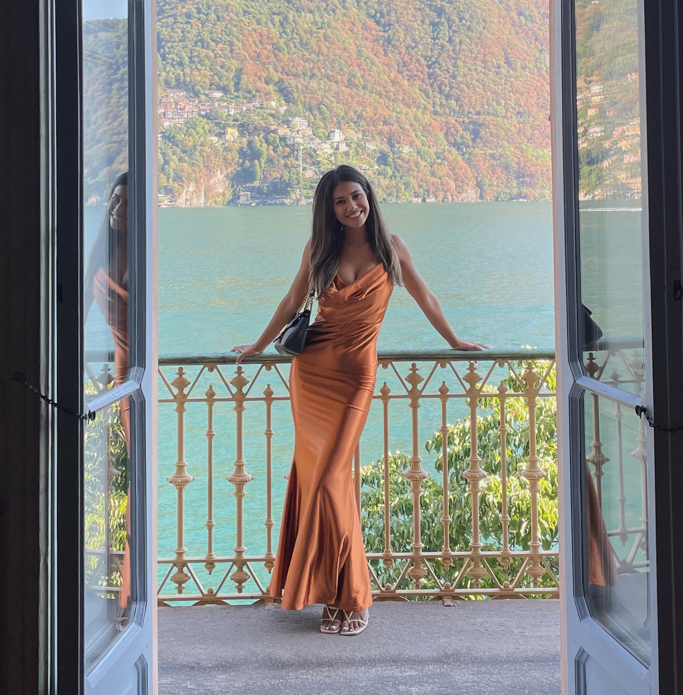

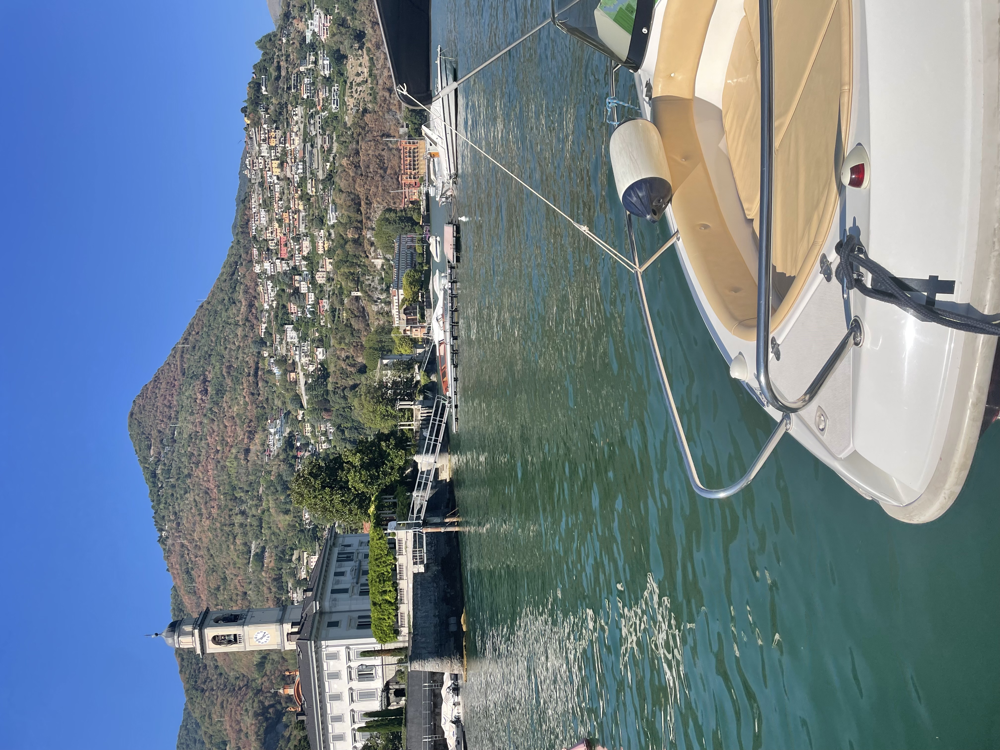
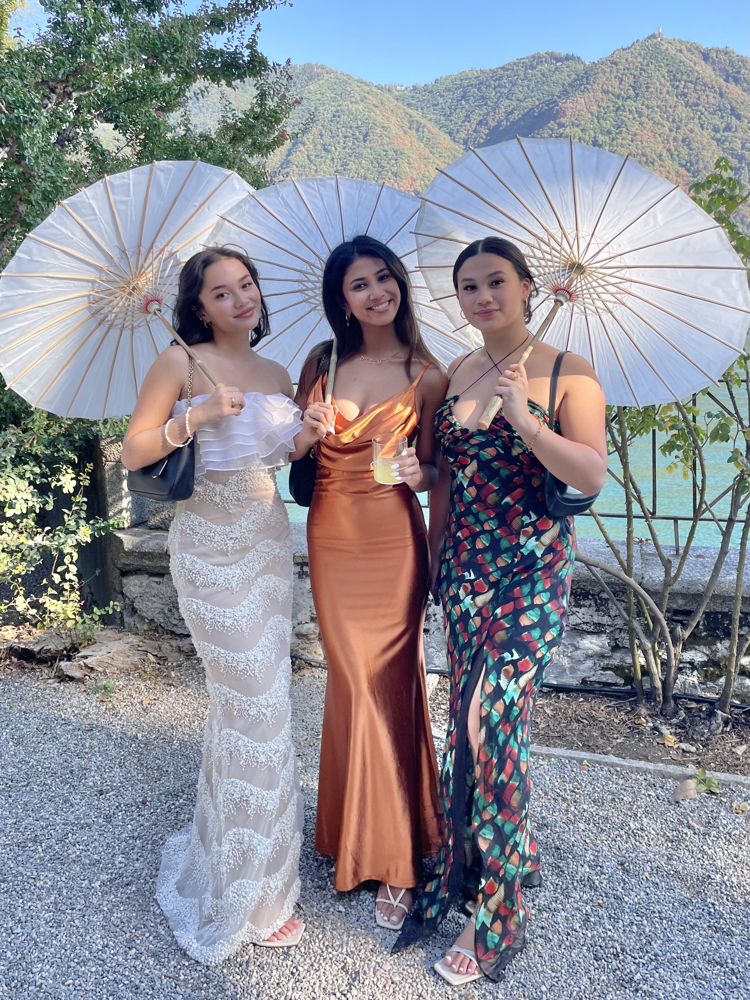
Now, let’s look at some of my favorite looks:
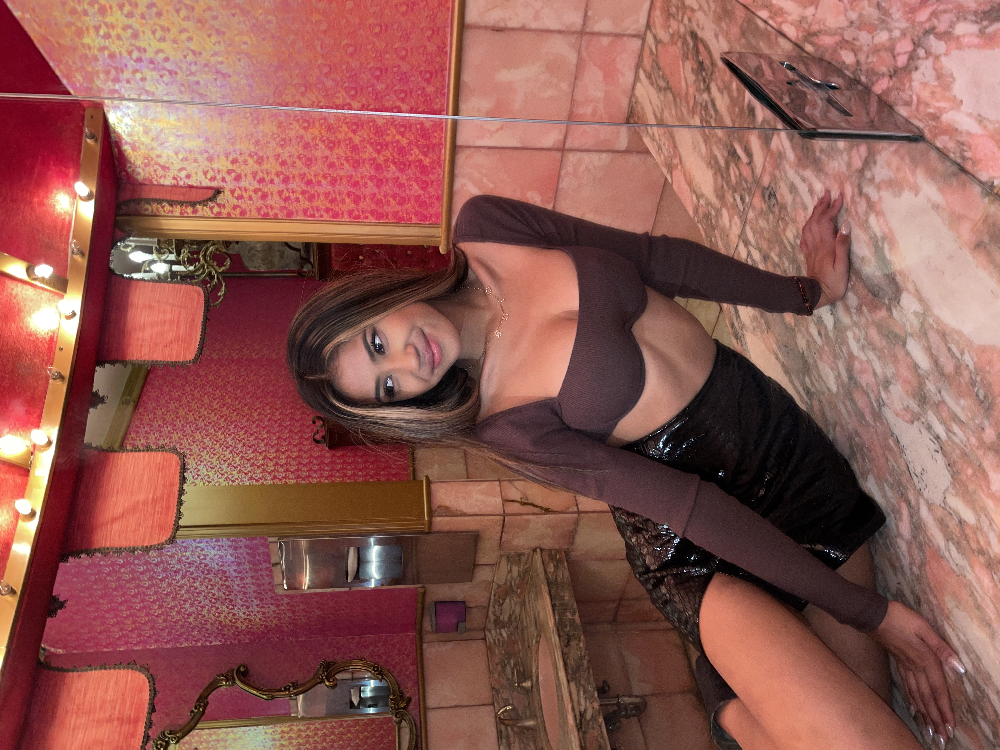
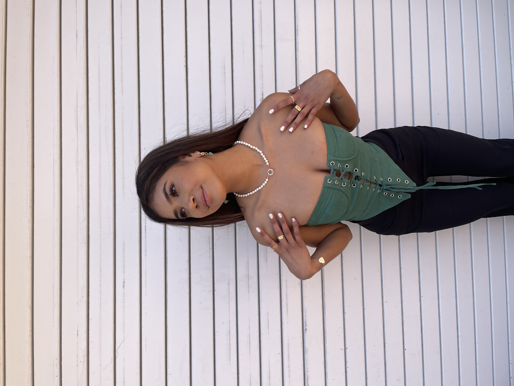
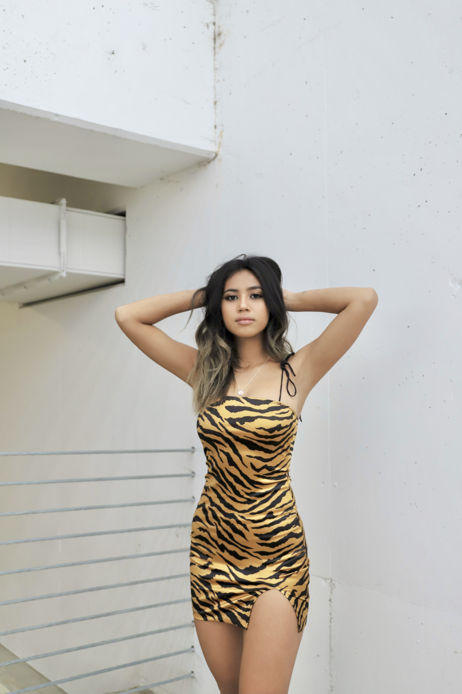

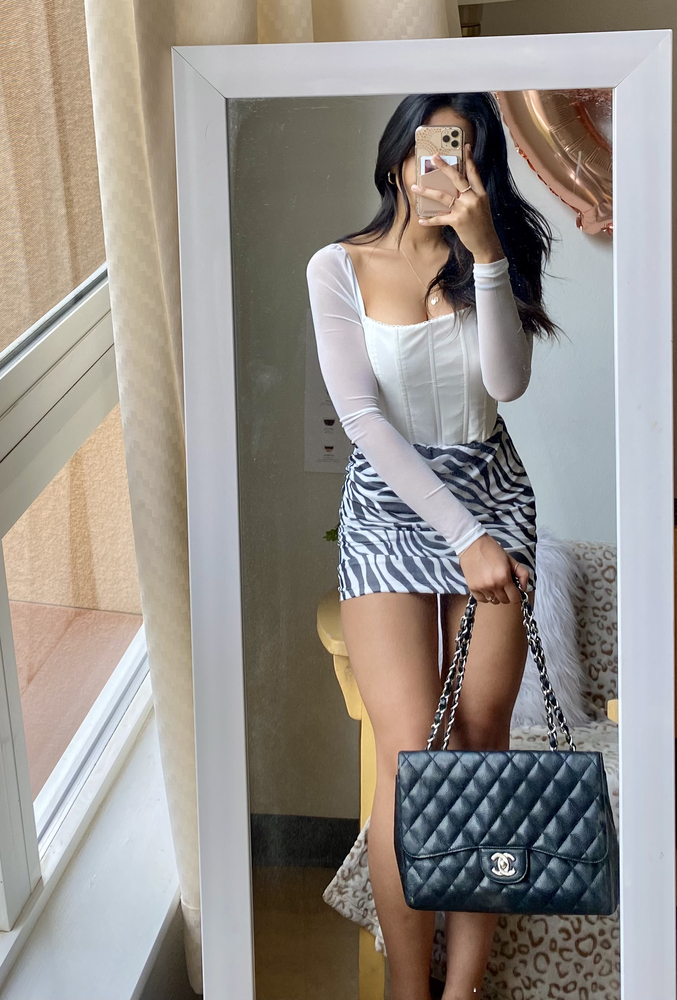
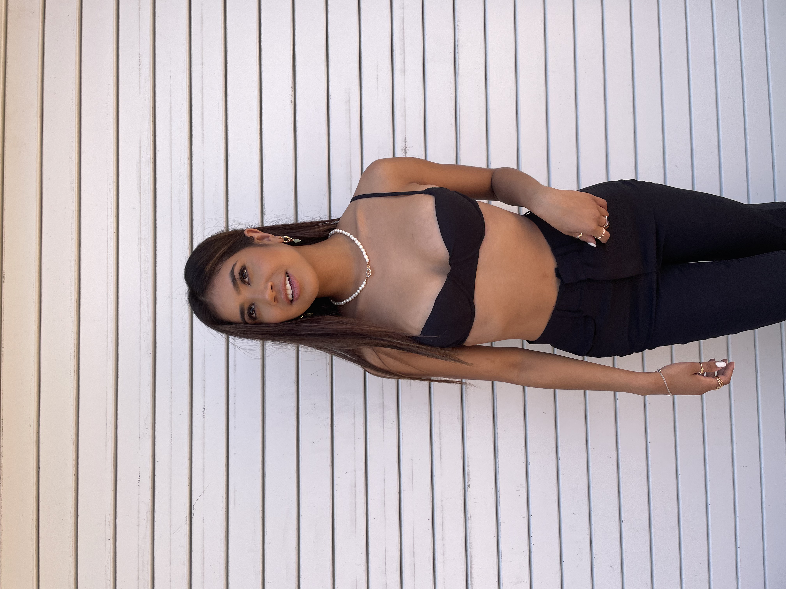
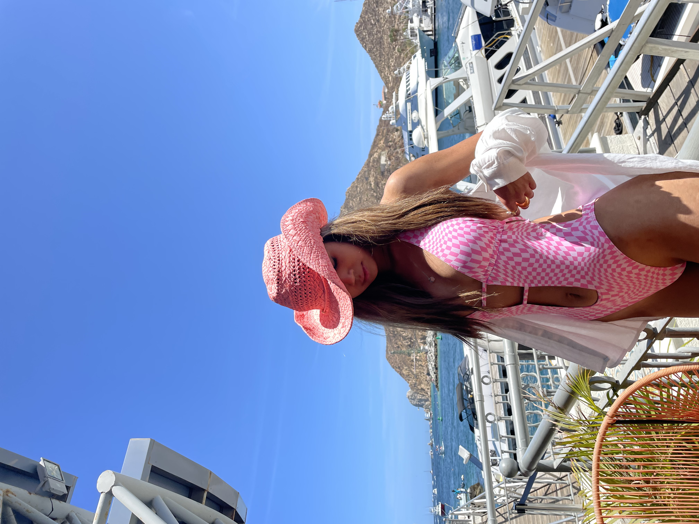
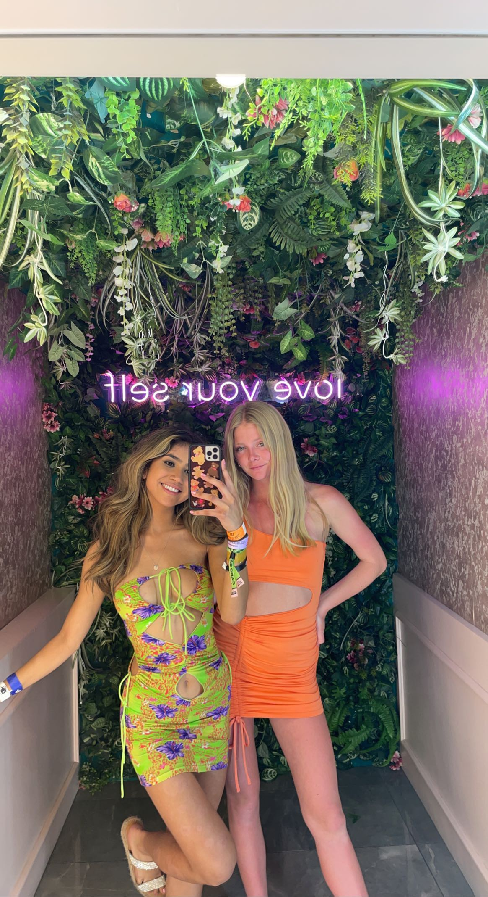
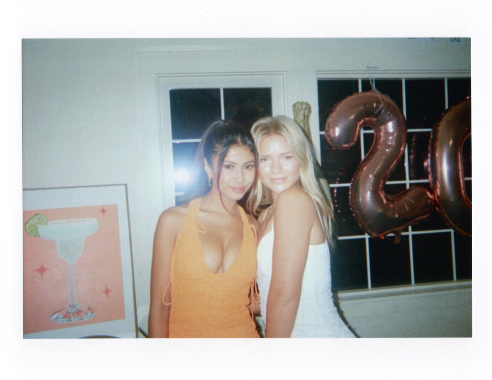
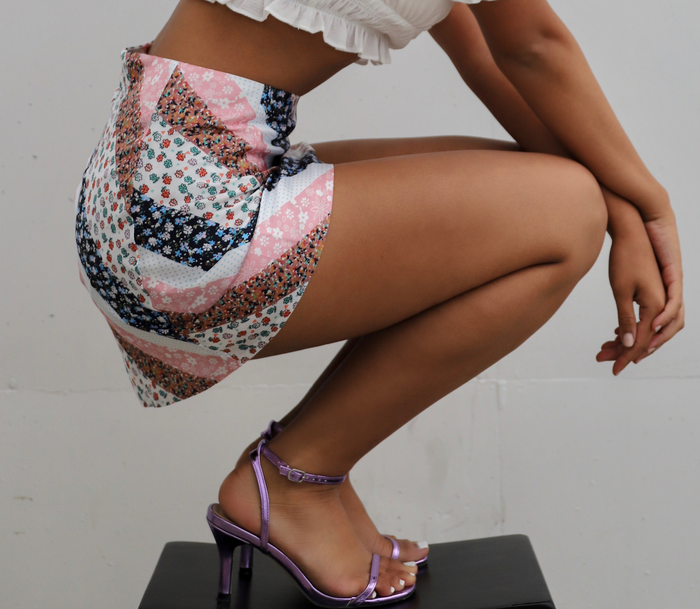